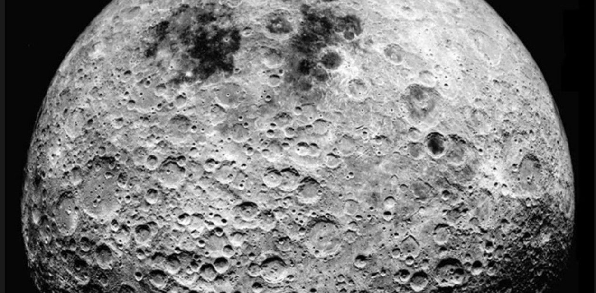

La noticia es cierta Maricarmen ha fallecido tras ser desahuciada de su vivienda
La noticia es falsa, la luna no está habitada por seres humanos

La noticia es falsa, el Papa no votó a Trump
La noticia es cierta, el hijo del jeque ha sido condenado a prisión por irregularidades en la gestión del club de Málaga
Contacta con nosotros si tienes información sobre noticias falsas que quieras verificar